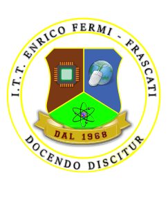
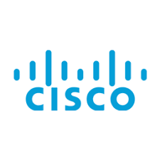

App & Website developer | IT student at the University of Rome Tor Vergata | Entrepreneur
Hi there! 👋 I'm a passionate developer with a long history in the world of programming, starting at
just 12 years old. At 17, I was lucky enough to work as a developer for a software house for a year,
before transitioning to a freelance career. Currently, at 20 years old, I am studying Computer
Engineering at Tor Vergata University in Rome. 🎓🌟
In my work, I mainly focus on app and website development, combining creativity and technical skills to
create innovative solutions. 💡💻 Since I turned 18, I have also developed a strong interest in finance,
beginning to invest my savings in the stock and bond markets. 📈💰
I have collaborated with several agencies to create websites, gaining valuable and diverse experience in
the field. 🌐 My passion for technology and dedication to continuous improvement are what drive me to
grow every day. 🚀

I graduated from ITT Enrico Fermi in Frascati with a score of 100/100, significantly expanding my software knowledge and building a solid foundation in computer networking. 💻🎓
Since the start of the 2024 academic year, I have been attending the Computer Engineering course at the University of Rome Tor Vergata. In this program, I aim to specialize in machine learning and artificial intelligence, two fields I consider essential for the future of technology and innovation. 🚀💻
At 17, I started working at Syrus Industry in Rome as a Full Stack Web Developer, where I expanded my knowledge of PHP, HTML, CSS, Python, SQL, and Laravel. 🌐💻 I primarily worked as a back-end developer, developing management systems and applications of considerable complexity. This experience allowed me to grow professionally and refine my skills in web development. 🚀🔧
Currently, I'm working as a freelancer, developing various websites for different agencies. I've also ventured into app development with React Native, enhancing my skills in mobile development. Additionally, I have embarked on my studies in the field of artificial intelligence, a fascinating and opportunity-rich area for the future. 🚀💻📱

The Cisco Introduction to Cybersecurity certification provides a comprehensive overview of essential cybersecurity concepts. It covers topics such as threat identification, mitigation techniques, and basic security architectures. This certification is ideal for anyone starting their journey into the world of cybersecurity, aiming to build a strong foundation in protecting networks and data. 🛡️🌐
The Cisco Introduction to Networks certification provides foundational knowledge in networking concepts. It covers essential topics such as network security, IP addressing, Ethernet concepts, and the basics of routing and switching. This certification is a great starting point for anyone looking to pursue a career in network engineering or related fields. 🌐💡
The Cisco Linux Uncharted certification, also known as "Linux Unhatched," provides an introductory course that delves into the Linux operating system from multiple angles. It covers fundamental aspects such as installation, configuration, and basic system management. This course is ideal for building a solid foundation in Linux and is a great starting point for further certifications or IT careers. 🌐💡
For any information and/or proposal you can contact me at my email address: francyclimber@gmail.com or on my social channels: